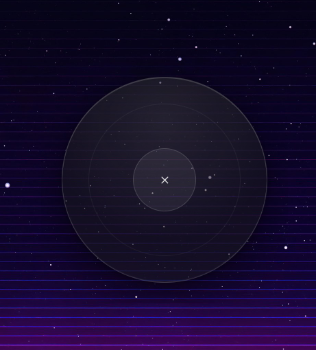
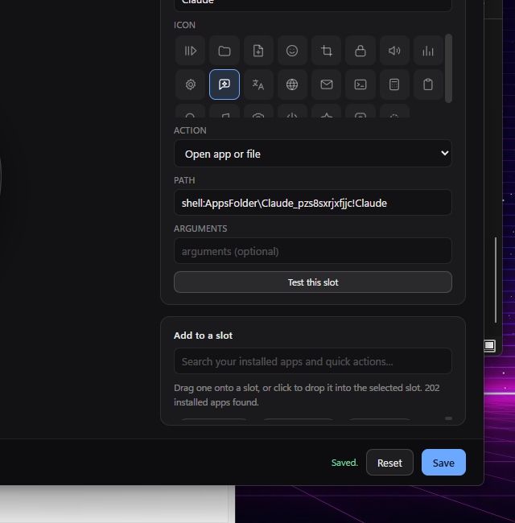

Every shortcut. One click.
Orbit puts the things you use most in a ring around your cursor. Middle-click anywhere in Windows and they're there.
A short look at how Orbit works.
How it works
Middle-click anywhere
The ring opens at your cursor, on top of whatever you're doing. Press it again, hit Esc, or click away to close it. You can rebind the trigger to any mouse button or key.
Hover to read, click to run
Each slot's name appears in the middle as you hover it. One click runs it and the ring disappears. Orbit never steals focus, so keyboard shortcuts land in the app you were actually using.
Make it yours
Open Settings from the tray icon. Search your installed apps, drag them onto the ring, and add or remove slots until it fits how you work.

The ring, open at the cursor.
Editing the ring
Everything is edited on a live copy of the ring itself, so you can see what you're changing.

Pick from installed apps
Search everything in your Start menu and drop it into a slot. Microsoft Store apps included.
Drag and drop
Drag a file, folder or shortcut straight from Explorer onto a slot. Drop it on empty space to add a new one.
Between 2 and 12 slots
Add, remove and swap slots. Buttons resize automatically so the ring stays easy to hit.
Test before you save
Every slot has a Test button, so you know it works without closing Settings.
Five kinds of shortcut
Any slot can be any of these, and you can change it whenever you like.
Open an app or file
Anything Windows can open — programs, documents, folders, shortcuts, Store apps.
Open a website
A URL in your default browser. Handy for an AI chat, a translator, or your ticketing system.
Send a keyboard shortcut
Fires a key combination into whatever app has focus — win+shift+s, ctrl+c, media keys, and so on.
Run a command
Any command line, with no console window flashing up.
Open Orbit's settings
Keep the editor itself one click away while you're setting things up.
What you get out of the box
Every one of these can be changed or replaced.
Get Orbit
Free, no account, and it installs for your user only — so you don't need administrator rights.
download Download Orbit for Windows v0.4.0 · 64-bit installerinfo Windows will warn you the first time
Orbit isn't code-signed yet, so Windows shows "Windows protected your PC". Click More info, then Run anyway. This is normal for small independent apps that haven't paid for a signing certificate.